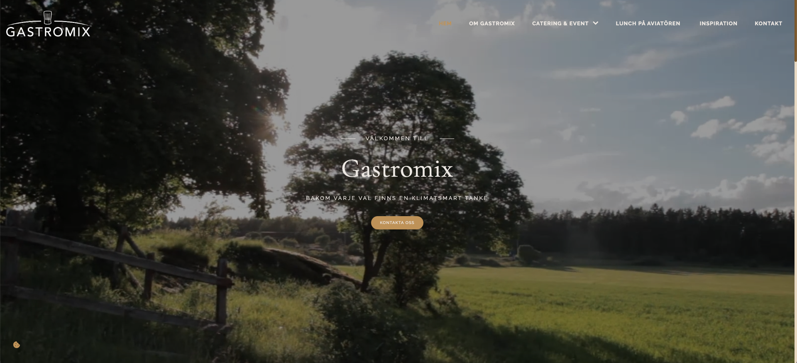
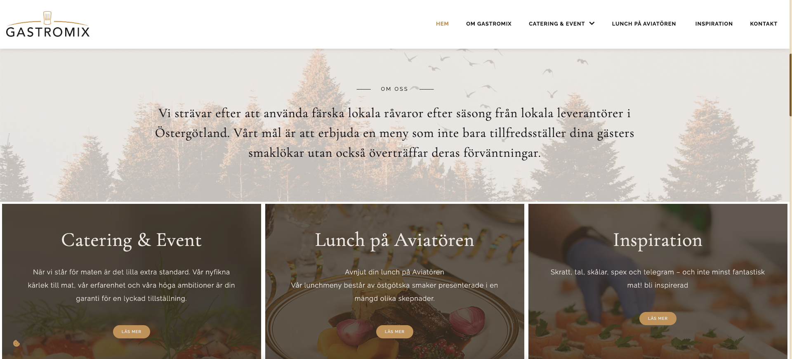
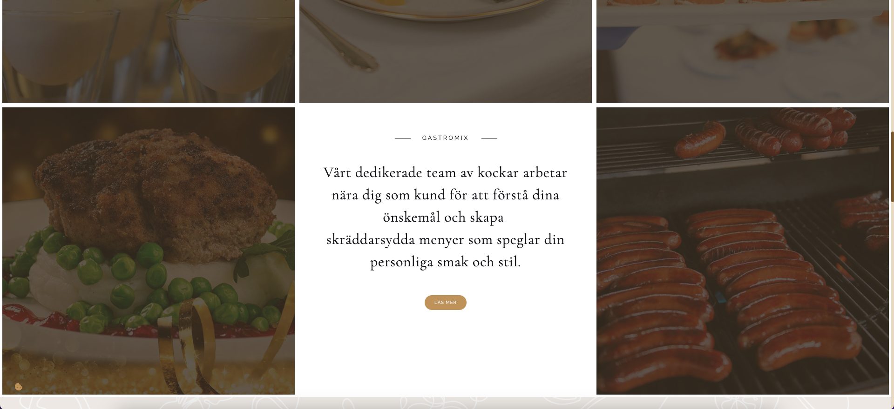
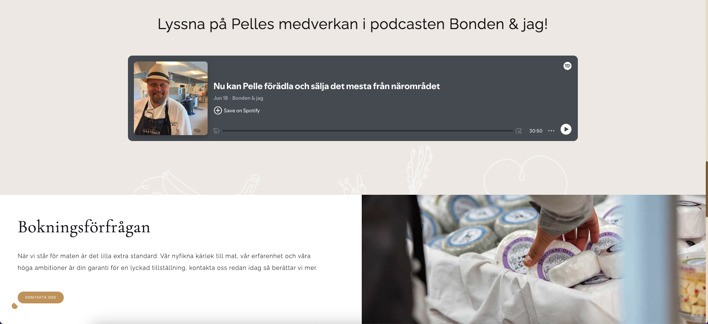
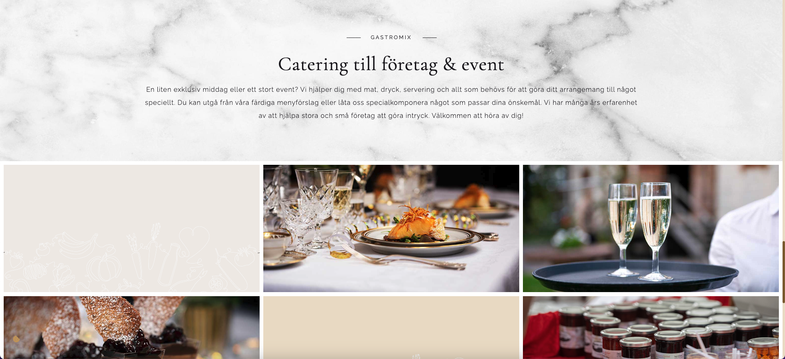
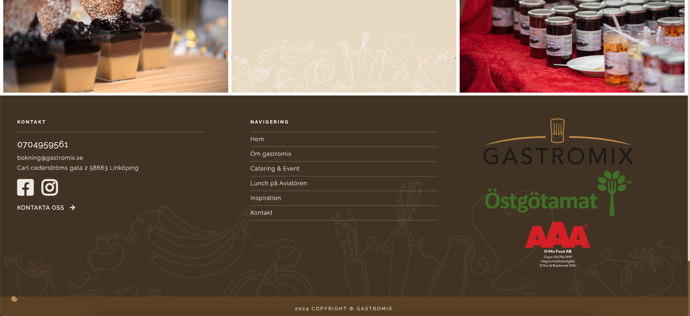

Problem Statement
Gastromix's previous website, had an outdated
design and limited functionality, making it less effective at
showcasing their catering and event services or engaging
potential clients.
Objective
The objective was to redesign the website with a modern,
user-friendly interface that reflects Gastromix's brand
identity, improves usability, and effectively communicates their
values and offerings.
Solution
The redesign of Gastromix's website focused on creating a modern, visually appealing, and user-friendly interface that aligns with their brand identity. Key improvements included a responsive design for seamless navigation across devices, optimized content organization to highlight services, and engaging visuals to showcase their culinary expertise. The updated site effectively communicates Gastromix’s values of quality and sustainability while enhancing user engagement and accessibility for prospective clients.
This solution addressed the need for a more impactful online presence, achieving the project goals.





